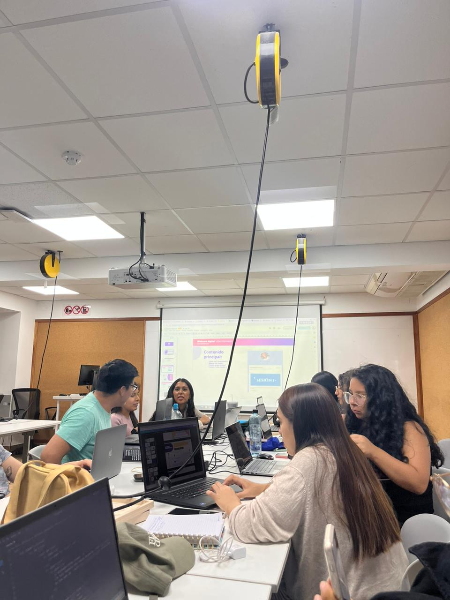
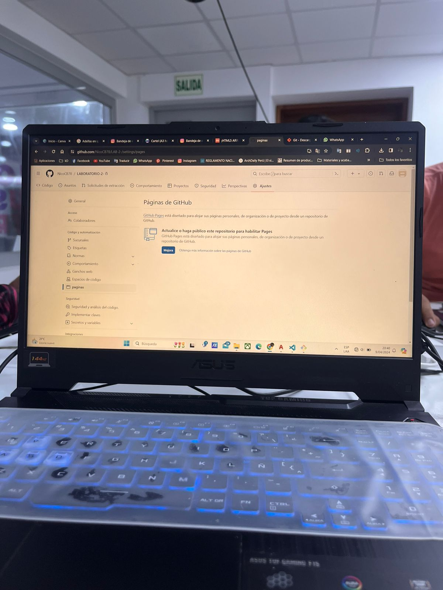
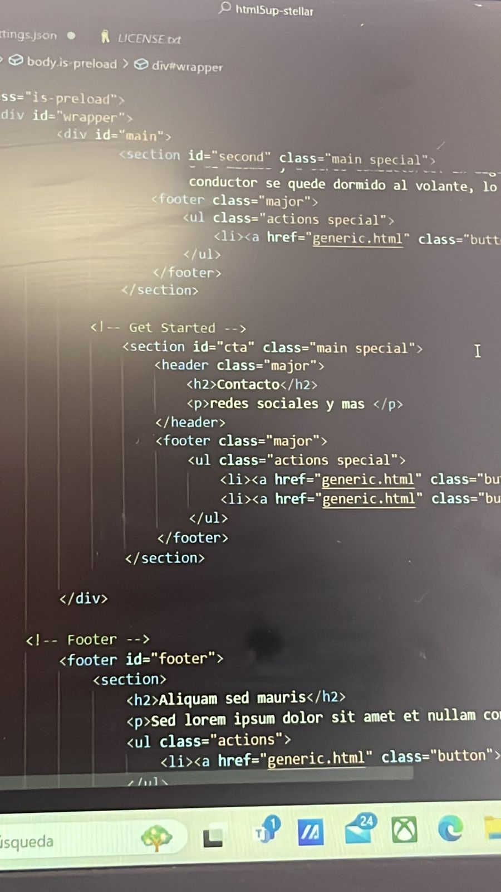
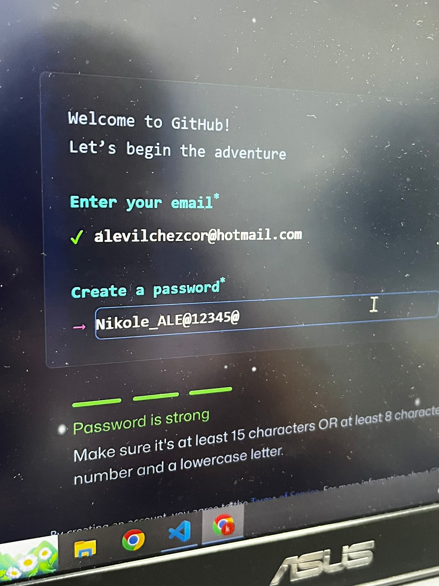
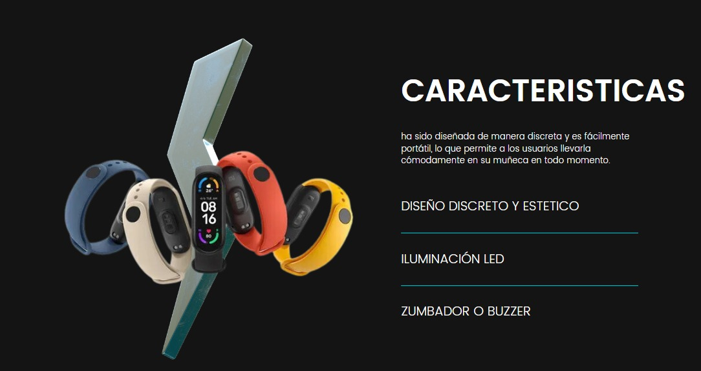
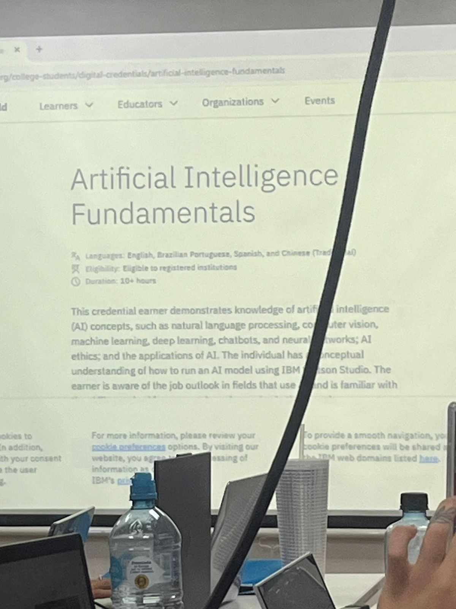
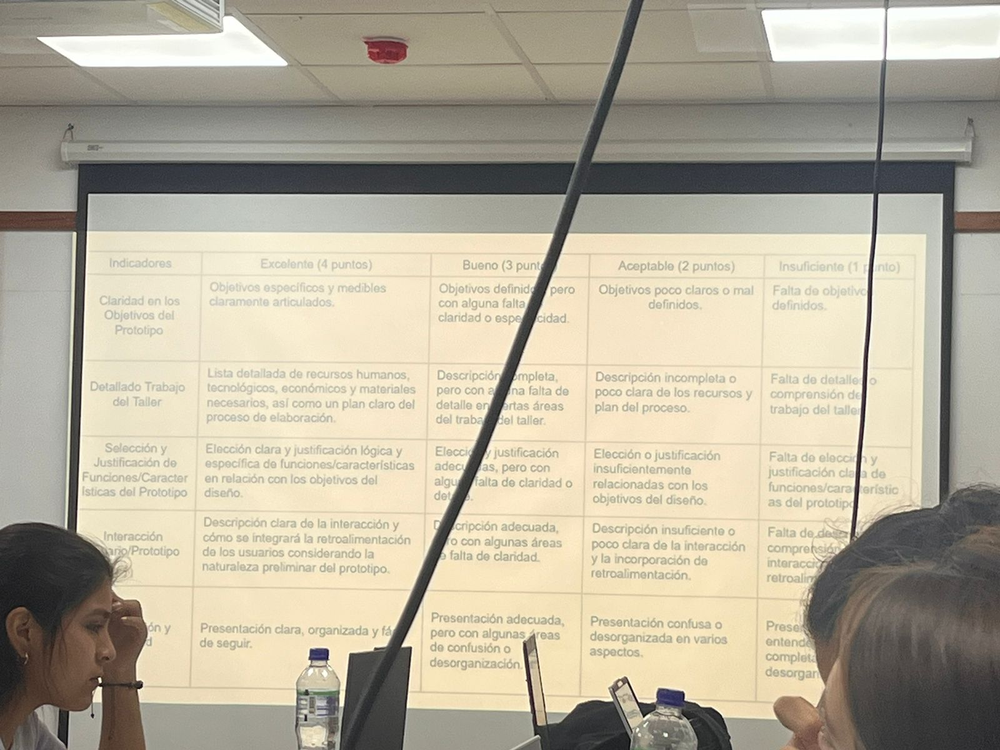

Nicole Chipa
Soy estudiante de Toulouse Lautrec, tengo 19 años y estoy cursando el 7to ciclo de la carrera de arquitectura de interiores, mis hobbies son dibujar, pintar, caminar y escuchar musica.
LABORATORIO DE INNOVACIÓN 2
Para mas information @toulouselautrec
Soy estudiante de Toulouse Lautrec, tengo 19 años y estoy cursando el 7to ciclo de la carrera de arquitectura de interiores, mis hobbies son dibujar, pintar, caminar y escuchar musica.
En la primera sesión el porfesor nos explico de que va tratar este curso, nos presentamos y opinamos nuestras expectativas, por ultimo comentamos que es lo que esperabamos desarrollar en este laboratorio 2 y nos dejo como tarea empezar a ver que problematica podiamos abordar para el proyecto de este ciclo.
Continuamos hablando un poco mas sobre la introduccion del curso y luego comentamos como es que un proyecto es innovador, y cuáles son sus principales características.El profesor reviso nuestra problematica y nos dio un feedback.

En esta nueva sesión comentamos para que sirve una bitácora, y cuál es el rol de la documentación en una investigación, el profesor nos mostro los programas que vamos a usar para programar y crear nuestra bitacora digital, en esta apuntaremos nuestros avances para el proyecto final.
El profesor nos mostro los interfaces y de los lenguajes de programación y cual es el significado de HTML, CCS y para que nos va a servir, tambien hablamos sobre de las diferencias entre las páginas webs estáticas y dinámicas.
Continuamos programando y viendo mas leguajes de programación, vimos como poner subtitulos, parrafos, imagenes y tambien vimos como es que funcion GitHub a la vez seguimos avanzando la problematica
seguimos investigando sobre la problematica, creando encuestas mas detalladas, difiniendo a profundidad nuestro usuario, vivmos cuales son los objetivos del prototipo y como seria la materialidad. Tambien avanzamos la bitacora.
En esta sesion hablamos sobre el curso BIM que es gratis para alumnos, el profesor nos enseño mas codigos de programacion y tambien vimos el tema de nuestro prototipo revisamos las encuestas y opiniones sobre nuestra problematca que estamos abordando.
Mejoramos nuestro prototipo con el feedback del profesor, añadimos inteligencia artificial, creamos un cuadro de variable diferencial para ver como es que se diferencia nuestro prototipo, arreglamos algunas cosas de visual studio que nos faltaba.
Aclaramos algunos puntos de la entrega final del trabajo grupal y de la bitacora, expusimos nuestro prototipo y quedamos en terminar las entrevistas para el jueves que se entrega los trabajos para el primer promedio.
“La pulsera que te mantendrá despierto durante tus viaje”.
Tener sueño (somnolencia) al volante es un factor de riesgo en el tránsito que afecta gravemente nuestra capacidad para conducir de forma segura. Es importante comprender los riesgos que implica la conducción bajo los efectos de la somnolencia, así como conocer los factores que se relacionan con su aparición para poder prevenirla. Esta pulsera con sensor de pulsaciones que detecta el cansancio y la somnolencia del conductor La pulsera emite una luz de advertencia cada 10 minutos para mantener al conductor despierto después de 30 minutos, la pulsera comienza a sonar para alertar al conductor de que debe descansar.
Estudiante de @toulouselautrec
Para mas información CANVA